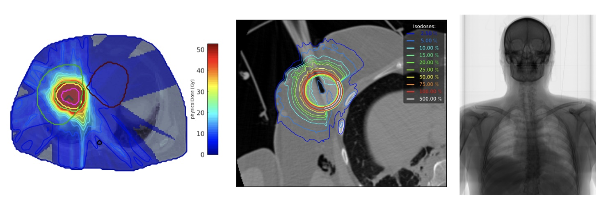

Advanced Monte Carlo Methods for Medical Physics
Monte Carlo (MC) simulation in medical physics is extensively used during research and development of nuclear imaging systems and treatment planning systems in radiotherapy. However, the increasing need for detailed and accurate simulations still leads to long simulation times. Variance Reduction Techniques (VRT) have been developed for years but are still restricted to specific applications. Fast GPU particle tracking methods have also been investigated but turned out to be difficult to maintain and generalize. Hence, there are still important needs to improve MC efficiency both in imaging and radiotherapy simulation. Recent developments on asymptotic VRT such as Quasi-Monte Carlo (QMC) and Artificial Intelligence (AI) open new ways to improve MC. However, these methods are still limited to some specific applications and do not revolutionize the basis of MC simulation for medical physics. The ambition of the MoCaMed project is to design, develop and evaluate advanced Monte Carlo sampling and Deep Learning methods to improve MC simulations in medical physics.